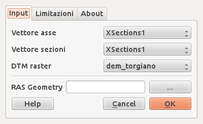

This version of Plugin Q-RAS is an experimental version. It’s need more tests anb presents some limitation: - only one river can be processed - only one reach can be processed - the plugin does not repoject your data so user have to use a consistent crs - the plugin is not able (for now) to integrate in geometry any structure, bridge, banks, obstructions
